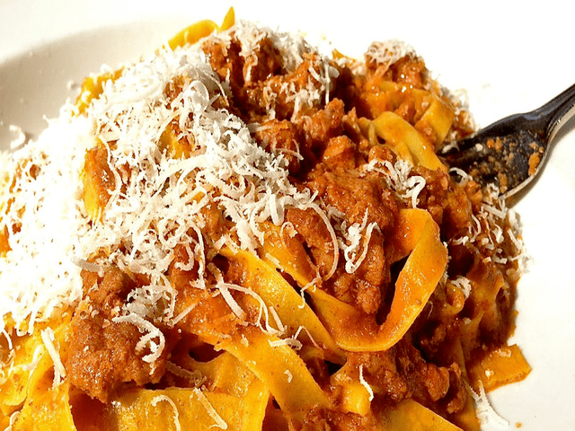

Wook de verduras
- Raciones: 4
- Tiempo Aproximado: 130min
Ingredientes
- 1 cebolla
- 1/2 pimiento verde
- 1/2 pimiento rojo
- 1/2 calabacín
- 2 zanahorias
- 1 diente de ajo
- Unos champiñones frescos
- Salsa de soja
- Pimienta negra molida
- Sal
- Aceite de oliva
Preparación
-
Lavamos bien los pimientos, los abrimos y les quitamos el tallo y las semillas del interior. Pelamos la cebolla, las zanahorias, el diente de ajo y el calabacín. Y lavamos los champiñones frescos y los laminamos. Con todos los ingredientes ya lavados y/o pelados, los troceamos todos en tiras no muy largas y que sean finas, de un tamaño similar. El ajo lo picamos bien finito.
-
Ponemos a calentar el wok, a intensidad fuerte, y cuando esté bien caliente echamos un chorrito de aceite de oliva virgen y echamos el ajo picadito y las zanahorias, y empezamos a cocinarlas sin dejar de remover, para que los ingredientes se vayan cocinando por igual. Iremos agregando los ingredientes según sean más o menos duros a la hora de cocinarse, por lo que cuando la zanahoria lleve un par de minutos o tres cocinándose, agregamos los champiñones.
-
Tras otros dos o tres minutos echamos los pimientos troceados y los dejamos otros tres minutitos más o menos. Siempre hay que remover constantemente para que todo se cocine bien. Agregamos finalmente el calabacín y la cebolla, salpimentamos al gusto y seguimos cocinando hasta que tengamos todos los ingredientes en su punto. Al acabar echamos un poco de salsa de soja por encima, removemos bien.
Fideos con salsa
- Raciones: 4
- Tiempo Aproximado: 30min
Ingredientes
Salsa
- Tomates perita
- 2 Cebollas
- 1 Ají morrón
- 1 Zanahoria
- Sal y pimienta
- Hojas laurel
Fideos
- 4 huevos
- 400 harina (1huevo y 100 de harina por comensal)
- 2 cdts aceite
- Sal
Preparación
-
En un recipiente con agua bendita caliente sumergimos unos segundos los tomates previamente le hacemos un corte en cruz en las base...Retiramos del agua y pelamos....Por último procesamos.
-
En una olla rehogamos los vegetales bien picaditos
-
Agregamos el tomate, y condimentos..y una cucharada de azúcar... Esto es para quitar la acidez del tomate....Y cocinar fuego suave hasta que la salsa este a gusto...
-
Para la masa colocar en forma de corona la harina, sal en el centro los huevos batidos, ligeramente, el aceite, y vamos formando la masa... De ser necesario agregar agua, muy poco ya que no debe quedar una masa muy blanda, amasamos bien durante 10 minutos... Dejar tapada 15 minutos para que repose.
-
Luego con la máquina de pasta firmamos los fideos... De no tenerla pueden estirar y cortar a cuchillo.
-
Hervir los fideos en abundante agua con sal, y servir con la salsa de tomate.
Rabas a la provenzal
- Raciones: 4
- Tiempo Aproximado: 90min
Ingredientes
- 1 Kg Tubos de calamar congelados
- 1/2 L Aceite
- 1 Kg Harina
- 3 huevos
- Sal y pimienta
- 1 ajo y perejil
- 2 limones
Preparación
-
En los tubos hay que retirar con mucho cuidado una capa de piel que recubre al calamar con una cuchilla y una espinilla parecida a un pequeño plástico largo y fino de color transparente.
-
Una vez limpios, los tubos se comienzan a cortar de forma horizontal a su base, dándoles un ancho de una pulgada (2,5 cm) o menor, como ustedes quieran.
-
En un bol u olla echar 3 huevos y batir con tenedor 5 minutos hasta quedar la yema revuelta, agregar 2 cdas de sal y el provenzal. Echar las rabas cortadas dentro y mezclarlas.
-
En una fuente o una pizzera hechar 1/2 Kg de harina, sal y pimienta blanca molida a gusto, un poco del provenzal, y mezclar bien. Sacar una por una las rabas (dejar que chorreen antes de pasarlas) y pasarlas donde esta la harina mezclada. Masajear bien las rabas con la harina.
-
En 1 sarten echar aceite y poner a calentar. Hervir el aceite y echar las rabas (que no tengan excedente de harina) y poner fuego a mínimo así no se te queman las rabas.
-
Por último, retirar las rabas del aceite con un un tenedor o una espumadera depositándolas en una fuente con papel de cocina absorbente , ponerlas en 1 o 2 platos, cortar los limones y a disfrutar.
En los tubos hay que retirar con mucho cuidado una capa de piel que recubre al calamar con una cuchilla y una espinilla parecida a un pequeño plástico largo y fino de color transparente.
Una vez limpios, los tubos se comienzan a cortar de forma horizontal a su base, dándoles un ancho de una pulgada (2,5 cm) o menor, como ustedes quieran.
En un bol u olla echar 3 huevos y batir con tenedor 5 minutos hasta quedar la yema revuelta, agregar 2 cdas de sal y el provenzal. Echar las rabas cortadas dentro y mezclarlas.
En una fuente o una pizzera hechar 1/2 Kg de harina, sal y pimienta blanca molida a gusto, un poco del provenzal, y mezclar bien. Sacar una por una las rabas (dejar que chorreen antes de pasarlas) y pasarlas donde esta la harina mezclada. Masajear bien las rabas con la harina.
En 1 sarten echar aceite y poner a calentar. Hervir el aceite y echar las rabas (que no tengan excedente de harina) y poner fuego a mínimo así no se te queman las rabas.
Por último, retirar las rabas del aceite con un un tenedor o una espumadera depositándolas en una fuente con papel de cocina absorbente , ponerlas en 1 o 2 platos, cortar los limones y a disfrutar.
Ajoblanco con pesca, terrina de papa y uvas
- Raciones: 4
- Tiempo Aproximado: 180min
Ingredientes
Ajoblanco
- 200 g de almendras peladas
- 50 g de miga remojada en vinagre de jerez
- 3 dientes de ajo asados
- 100 g de oliva
- 600 g de agua fría
- A gusto sal y pimienta
Terrina de papa
- 5 papas grandes
- 150 g manteca
- Tomillo y salvia c/n
- A gusto sal y pimienta
Guarnición
- 50 g de garbanzos cocidos
- 50 g de uvas
- 100 g de pescado fresco
- 50 g de garbanzos cocidos
- 50 g de uvas
- 100 g de pescado fresco
Preparación
-
Para el ajoblanco, remojar las almendras en agua helada 12 horas.
-
Mixearlas con el pan y el ajo y agregar agua hasta obtener una textura cremosa, emulsionar con oliva y salpimentar
-
Para la terrina, cortar las papas con mandolina de forma longitudinal. Derretir la manteca con las hierbas. Forrar una budinera con aluminio y enmantecar
-
Disponer capas de papa, manteca y sal y pimienta hasta cubrir. Llevar a horno medio 40'.Dejar enfriar, cortar en cubos y dorar en sartén
-
Para la guarnición, freír los garbanzos y condimentar con curry
-
Por último, cocinar el pescado en una sartén con oliva y láminas de ajo. Servir con uvas.
Para el ajoblanco, remojar las almendras en agua helada 12 horas.
Mixearlas con el pan y el ajo y agregar agua hasta obtener una textura cremosa, emulsionar con oliva y salpimentar
Para la terrina, cortar las papas con mandolina de forma longitudinal. Derretir la manteca con las hierbas. Forrar una budinera con aluminio y enmantecar
Disponer capas de papa, manteca y sal y pimienta hasta cubrir. Llevar a horno medio 40'.Dejar enfriar, cortar en cubos y dorar en sartén
Para la guarnición, freír los garbanzos y condimentar con curry
Por último, cocinar el pescado en una sartén con oliva y láminas de ajo. Servir con uvas.